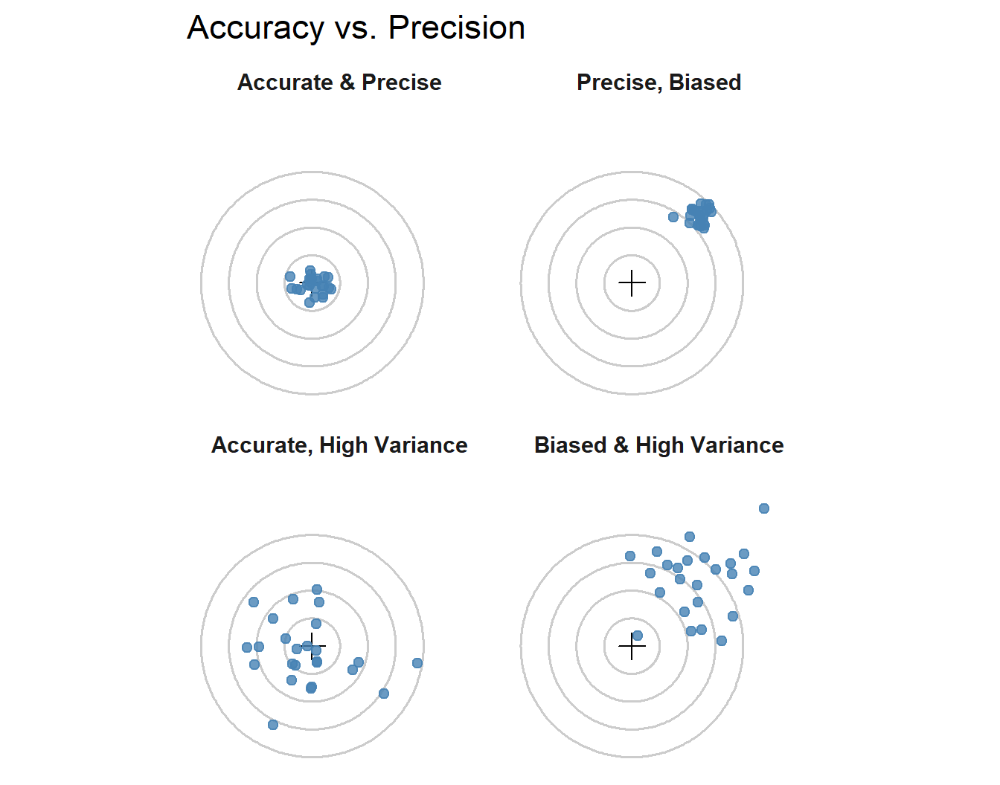
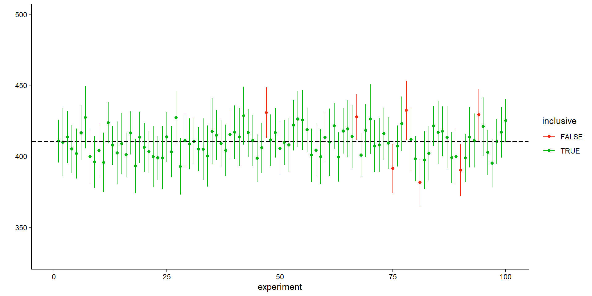

Discuss, and answer in your own words.
There are many definitions.
My favorite definitions: * Statistics is the science of learning from data in the face of uncertainty. * Statistics is the study of uncertainty and variability.
Statistical models are not deterministic, they are probabilistic. They are used to describe the uncertainty in the data.
A population is the entire set of individuals or items that we are interested in studying.
Population: “all subjects of interest”
Biological meaningful
A sample is a subset of the population that we actually observe or collect data from.
Sample: “a subset of the population”
If we collect data from the entire population, there is no need for inference.
Why?
variables
data
an
observation
| site | latitude | size | air_temp |
|---|---|---|---|
| PIE | 42.7 | 21.2 | 10.293 |
| PIE | 42.7 | 18.75 | 10.293 |
| PIE | 42.7 | 19.51 | 10.293 |
| PIE | 42.7 | 17.58 | 10.293 |
| PIE | 42.7 | 21.19 | 10.293 |
| PIE | 42.7 | 18.67 | 10.293 |
| PIE | 42.7 | 18.94 | 10.293 |
| PIE | 42.7 | 16.29 | 10.293 |
| PIE | 42.7 | 19.37 | 10.293 |
| PIE | 42.7 | 17.52 | 10.293 |
| GTM | 30 | 12.43 | 21.792 |
| GTM | 30 | 11.84 | 21.792 |
| GTM | 30 | 11.58 | 21.792 |
| GTM | 30 | 14.55 | 21.792 |
Categorical
qualitative
Numerical
quantitative
Nominal
no order
Ordinal
ordered
Discrete
counts
Continuous
measurements
Species, site, treatment
bass, trout, bluegill
Condition
poor, ok, great
Abundance
0, 1, 2, 3, 4…
Length, biomass, temperature
12.4 cm, 27.8 g, 21.5°C
Extra numerical distinction:
Temperature in °C is interval scale because 0°C is not “none.”
Length, biomass, and abundance are ratio scale because 0 means none.

The central limit theorem states that the distribution of the sample mean will be approximately normally distributed, regardless of the shape of the population distribution, as long as the sample size is sufficiently large (usually n > 30).

Statistical inference is founded in the ability to quantify uncertainty.
We use probability to quantify uncertainty in our estimates and predictions.
Probability tells us how likely a particular outcome is, given a known model or distribution.
Please read teh following by next Monday https://collinn.github.io/sbi/index.html
An Intuitive, Interactive, Introduction to Biostatistics by Caitlin Ward and Collin Nolte
Submit questions you may have.